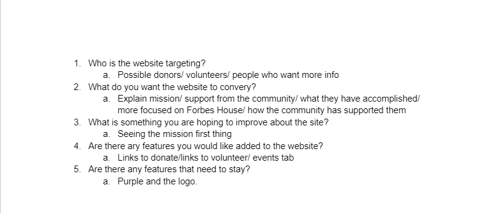
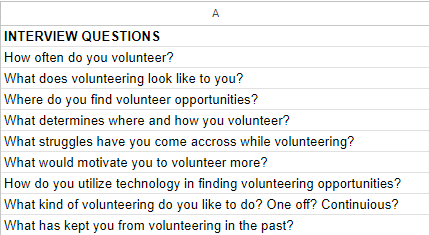
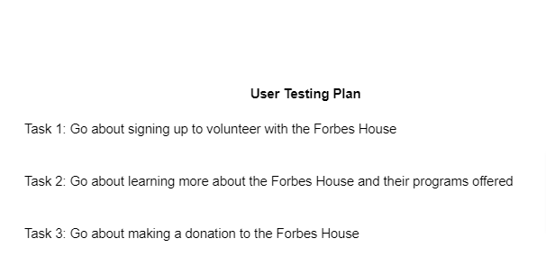
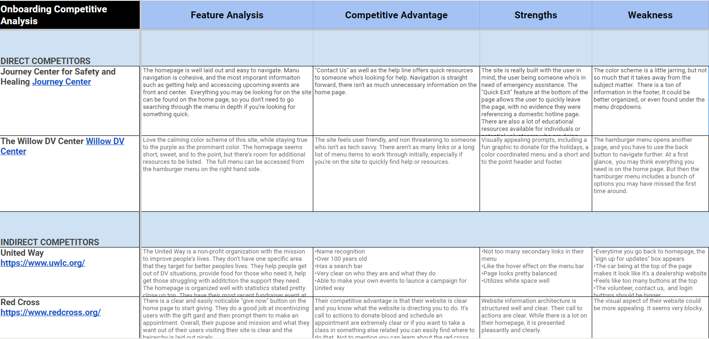
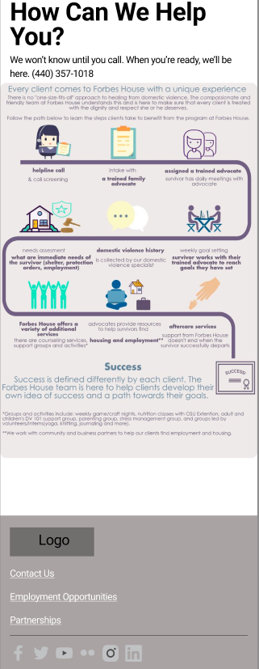
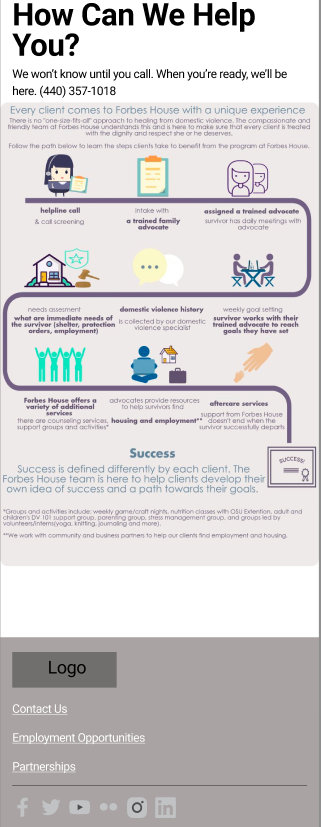
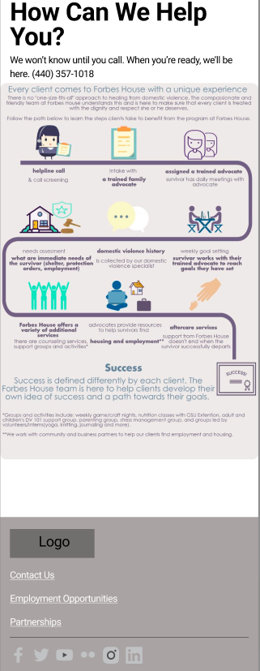

My team was tasked with redesigning a local non-profits homepage and secondary pages with reactive web design for Mobile, Tablet, and Web browser. We chose the non-profit Forbes House, which is a domestic violence shelter in Lake County, Ohio. After conducting interviews with potential users and a board member from Forbes house, user tested the live site, analyzed the data collected, we were able to build prototypes and come up with a final design for mobile, tablet, and desktop use.
The Problem
Forbes House website has a busy home screen and volunteer page, advertisements for events that are months out of date, a lengthy volunteer application, and many unnecessary buttons.
The Solution
Redesign the homepage with a highlight of the mission of Forbes House, have clear call to action buttons for volunteers/donors, and reorganize the important content to be easily understood.
Role and Responsibility
UX/UI researcher and designer
Tools
Figma, FigJam, Google Sheets, Slides, and Docs
Group Members
Michelle Swanner
Jessica Colenzo
McKinley Ward
Phase 1: Research
To start off this project the group wanted to get an idea of what the stakeholders at Forbes House would like to see on the website. We were able to interview a board member and the takeaways we received from them are as follows:
They think the website should target volunteers and donors
Wants the website to explain the mission and what they have done for the community
Wants clear links for the volunteer and donate pages.
Next we conducted user interviews. We interviewed 3 classmates on their volunteer habits. From this we gathered:
People just don’t have time to volunteer and if they do, they are held back from doing so because they don’t know where to look.
When they do volunteer they usually find out from family or community members
Note: At this time we began to realize that maybe a user interview wasn’t exactly what we needed to collect the data we wanted, so that is why there are only 3 interviews.

Forbes House board member interview questions and answers

User interview questions
We moved on to user tests to see how our users were able to interact with the website. The tasks we asked them to complete are listed below. Six users were tested. The takeaways from the test are:
Users did not like how out of date events were
Homepage felt like too much information and hard to sort through
The site was easy to navigate, but there are too many unnecessary buttons/links

Phase 2: Defintion
With our user testing results, we created a prioritization matrix to help us sort out what was most important for the redesign. We decided based on our interviews and user test results our focus should be on having important resources front and center on page, making the volunteer page less busy, and making an easy to use donate button on the homepage.
The user persona we came up with is for a teacher, Angela, who wants to get involved in her community. She doesn’t have too much free time, so when looking for volunteer opportunities, she needs the information to be clear. Forbes House seems like a good place for her since she has students who have been in DV situations and wants to better understand the recourses out there.
A competitive analysis was done in order to see what features and strength other non-profits had. Besides name recognition other features that we saw were “quick exit button” that allows someone who is on the site to easily leave to site to another site. Also big donate buttons on homepages since that is where most non-profits get any kind of money from.

A problem statement, user insight, and hypothesis statement were created to better iterate the issues and needs of the users.
Phase 3: Ideation
Our next step in the design process was to build out a sitemap. We felt it was important to get our main navigation figured out before we did any type of wireframing and designing. We made headers for the links we felt were the most important. This ended up being our final main navigation for the site.
Below is our low fidelity wireframe for the redesign. We designed it with a mobile first approach in mind and then later built the tablet and desktop wireframes. In this design, we wanted the mission to be from and center, before the fold. We also wanted the hotline number to be very clear as well, since first and foremost, this is a domestic violence shelter. Below that we have the two call to action buttons, “volunteer” and “donate” to make these easy.

With our first iteration of the redesign done, we did a usability test. We had 3 classmates complete the tests and the results are listed below.
Our users completed 3 tasks: 1. Sign up to volunteer with Forbes House, 2. Make a donation and 3. Locate the page where people would go to see what others have said about Forbes House. (Later changed to “find the testimonials page”. We had a 94% success rate with our usability tests. Participant 1 did not fully get the last task because of the confusing wording.
After the user test, we went ahead and added graphics and iconography to the wireframes. We also removed the flow graphic from the first iteration since it was hard to read and did not any additional information.
The group conducted A/B tests of some elements of our redesign to see what users like more. We tested whether users preferred the volunteer form to be nested or not and if they preferred the “donate now” button to be purple or red.
We found that the users preferred the nested volunteer form over the not nested one. They were less overwhelmed with the nested form and more likely to fill it out. For the purple vs. red donate button, users liked the purple button more since it stuck to the theme and everyone knows not to press the big, red button.
Phase 4: Prototyping
Desktop
Style Guide
Above are images of the finished prototypes for the desktop and tablet version on the redesign. We kept the design as consistent as possible with almost no difference except for scale.. Under those is the style guide for the site. We kept with a purple theme since purple is the color of domestic violence awareness. There are also some redesigns for a new logo.
Feedback we received from the redesign is to not have text directly over images and make the monetary donation buttons stand out more from the final donate button.
Redesigning this site was very fun and challenging. If we had more time we would have built out the entire site and put more thought into the logo redesign.
We learned the benefits and the challenges of working with a team, how having effective communication is important, and letting each team member work on what they know their strengths are.
Some future features we would like to add to the site are a “quick exit” button and volunteer testimonials.


.png)
.png)
.png) 

.png)